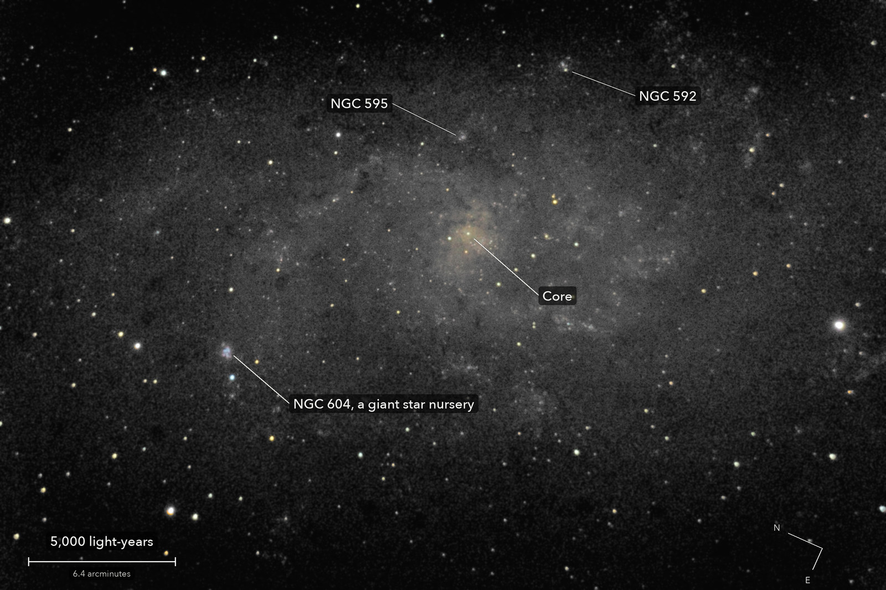

The Triangulum Galaxy
Messier 33, a spiral galaxy in Triangulum
The third-largest galaxy in our small group of neighbours, after Andromeda and our own Milky Way: a loose spiral of some 40 billion stars. The bright knot at lower left, NGC 604, is a cloud where new stars are being born, 1,500 light-years across.
What you are looking at

Swipe sideways to see the rest. Tap the picture for full size.
- Distance
- About 2.7 million light-years
- This picture spans
- 30,000 light-years; the whole galaxy is about twice that
- The light left
- 2.7 million years ago, as the ice ages began
- Honest note
- The disc is grey on purpose: these frames cannot measure its faint colour
For photographers
5.25 minutes of light on one field, under a clear sky.
- Exposures
- 21 x 15 s at ISO 3200: 5.25 minutes
- Frames
- 24 taken, 21 kept. 3 smeared by the mount, every star stretched the same way: one taken during a nudge, two that drifted. One 2 s centring frame left out. Clear: every kept frame within 2 percent of the run's star brightness
- Sampling
- 0.776 arcsec per pixel: one pixel per 2 x 2 colour cell. Stars 3.9 arcsec wide (half-flux), the sharpest of the night
- Field
- 38.4 x 25.6 arcmin: one sensor frame, in the camera's orientation (north up and to the left)
- When
- 8 to 9 October 2026, around midnight, over 15 minutes. 69 to 72 degrees up, no Moon
- Field rotation
- 0.5 degrees over the run, corrected in registration
- Calibration
- No darks and no flat frames were taken. The flat is built from the night's own open-sky frames of M57 and NGC 1514, at the same exposure: vignetting (corners at 69 percent) and 10 dust shadows divided out. Hot pixels from the run itself
- Stacking
- RAW colour planes (no demosaic), hot pixels by 3 x 3 median, registered on stars with rotation, sigma-clipped weighted mean. One constant per colour per frame, set where the galaxy is faintest; no surface fitted, the galaxy fills the frame. Noise 4.4 times lower than one frame (4.6 expected)
- Colour
- Shown only where the light can carry it, 0.5 percent of the picture: the core, star clusters, the brightest star-forming clouds and the stars. The faint disc is grey because its colour here would be set by the flat, not measured
- Finish
- The camera's daylight white balance and colour matrix. Brightness smoothed 1 px (2 px where dark), arcsinh stretch, saturation x 1.1. Black just above the faintest part of the galaxy
- Not used
- Wiener and Richardson-Lucy restoration: every setting that made the stars smaller dug a dark moat round the bright ones
- Telescope
- Celestron 8SE Schmidt-Cassegrain: 203 mm aperture, 2,083.5 mm focal length by plate solve of this stack, f/10.3
- Camera
- Sony a6000, stock, at prime focus: APS-C 23.5 x 15.6 mm, 6000 x 4000, 3.9 micron pixels, RAW
- Mount
- Sky-Watcher EQ6-R, unguided. Set down without leveling, 13.4 degrees off the pole; aligned from four plate-solved photos, both axes driven from that model
© 2026 Brad Gessler · Celestron 8SE (8 inch, 2,082 mm) and Sony a6000 on an EQ6-R · San Francisco Bay Area · night of 8 October 2026
Capture and mount: Observatory (Elixir on a Raspberry Pi 3). Stacking: numpy, SciPy, OpenCV, rawpy. Plate solving: astrometry.net. Stacked from the camera's RAW frames. Nothing generated.
© 2026 Brad Gessler. The pictures and the words are his own; all rights reserved.